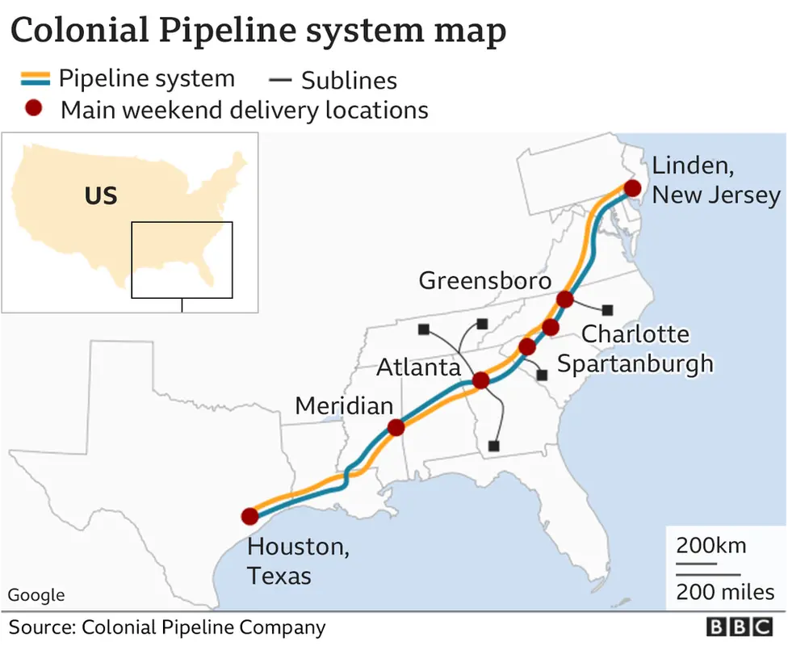

Investigation
Once operations were restored, the Federal Bureau of Investigation (FBI) took the lead in investigating the incident. Within days, agents identified DarkSide, a Russia-linked ransomware group, as the perpetrators behind the Colonial Pipeline attack. DarkSide functioned as a criminal service provider, leasing its malware to affiliates who carried out attacks in exchange for a share of the ransom.
Working alongside the U.S. Department of Justice (DOJ) and the Cybersecurity and Infrastructure Security Agency (CISA), investigators began tracking the Bitcoin ransom payment made by Colonial Pipeline. Using blockchain analysis and international coordination with cryptocurrency exchanges, the DOJ announced on June 7, 2021, that it had recovered 63.7 Bitcoin, worth about $2.3 million at the time, roughly half of the ransom payment.
The seizure was hailed as a major symbolic victory for law enforcement, demonstrating that cryptocurrency transactions can be traced and recovered even when used for illicit activity. However, the DarkSide network itself largely vanished shortly afterward, with its operators likely regrouping or rebranding under new names. The Colonial investigation marked a milestone in cybercrime response, showing how governments can combine forensic expertise, financial intelligence, and international cooperation to confront global ransomware operations.
